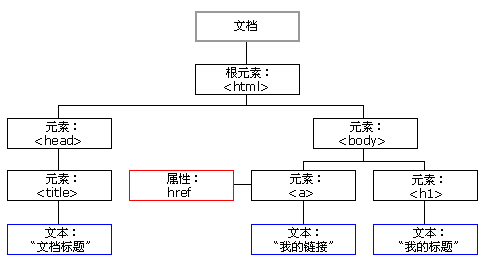

原文连接:https://www.cnblogs.com/setcreed/p/11885982.html
目录
BOM和DOM定义
BOM（Browser Object Model）是指浏览器对象模型，使JavaScript有能力于浏览器进行对话
DOM（Document Object Model）是指文档对象模型，通过它，可以访问HTML文档的所有元素
由于window对象是其它大部分对象的共同祖先，在调用window对象的方法和属性时，可以省略window对象的引用。例如：window.document.write()可以简写成：document.write()。
windows对象
所有浏览器都支持window对象，表示浏览器窗口
一些常用的Window方法：
- window.innerHeight - 浏览器窗口的内部高度
- window.innerWidth - 浏览器窗口的内部宽度
- window.open() - 打开新窗口
- window.close() - 关闭当前窗口
windows的子对象
navigator对象
navigator.appName // Web浏览器全称
navigator.appVersion // Web浏览器厂商和版本的详细字符串
navigator.userAgent // 客户端绝大部分信息
navigator.platform // 浏览器运行所在的操作系统screen对象
screen.availWidth // 可用的屏幕宽度
screen.availHeight // 可用的屏幕高度history对象
浏览器历史对象，包含了用户对当前页面的浏览历史
history.forward() // 前进一页
history.back() // 后退一页location对象
window.loaction对象用于获得当前页面的地址（URL），并把浏览器重定向到新的页面
常用的属性和方法：
location.href // 获取URL
location.href="URL" // 跳转到指定页面
location.reload() // 重新加载页面弹出框
可以在JavaScript中创建三种消息框：警告框、确认框、提示框
警告框
警告框经常用于确保用户可以得到某些信息。
当警告框出现后，用户需要点击确定按钮才能继续进行操作。
alert('can you see?')确认框
用于使用户
confirm('are you ok?')提示框
提示框经常用于提示用户在进入页面前输入某个值。
当提示框出现后，用户需要输入某个值，然后点击确认或取消按钮才能继续操纵。
如果用户点击确认，那么返回值为输入的值。如果用户点击取消，那么返回值为 null。
prompt('请输入你的答案')计时相关
通过使用js，可以在一定间隔后来执行代码，而不是在函数被调用后立即执行。我们称之为计时时间
setTimeout()
语法：
var t=setTimeout("JS语句",毫秒)例子
<!DOCTYPE html>
<html lang="en">
<head>
<meta charset="UTF-8">
<title>Title</title>
</head>
<body>
<script>
function func() {
alert('hello world!')
}
setTimeout(func, 3000)
</script>
</body>
</html>clearTimeout()
// 在指定时间之后执行一次相应函数
var timer = setTimeout(function(){alert(123);}, 3000)
// 取消setTimeout设置
clearTimeout(timer);setInterval()
上面的方法只是设置了一次定时器，setInterval() 方法可按照指定的周期（以毫秒计）来调用函数或计算表达式。它会不停地调用函数
function func() {
alert('hello world!')
}
setInterval(func, 3000) //每隔三秒钟执行一次clearInterval()
可取消由setIntertval()设置的timeout
例子
function func() {
alert('hello world!')
}
function show() {
var t = setInterval(func, 3000); // 每隔3秒执行一次
function inner() {
clearInterval(t)
}
setTimeout(inner, 9000)
}
show()
// 每隔3秒弹框一次，3次之后就不在弹框了HTML DOM树

DOM标准规定HTML文档中的每个成分都是一个节点(node)：
- 文档节点(document对象)：代表整个文档
- 元素节点(element 对象)：代表一个元素（标签）
- 文本节点(text对象)：代表元素（标签）中的文本
- 属性节点(attribute对象)：代表一个属性，元素（标签）才有属性
- 注释是注释节点(comment对象)
JavaScript 可以通过DOM创建动态的 HTML：
- JavaScript 能够改变页面中的所有 HTML 元素
- JavaScript 能够改变页面中的所有 HTML 属性
- JavaScript 能够改变页面中的所有 CSS 样式
- JavaScript 能够对页面中的所有事件做出反应
查找标签
直接查找
document.getElementById // 根据ID获取一个标签
document.getElementsByClassName // 根据class属性获取
document.getElementsByTagName // 根据标签名获取标签合集注意：通过标签和class查找的结果是数组，通过id获得的是对象本身
间接查找
parentElement 父节点标签元素
children 所有子标签
firstElementChild 第一个子标签元素
lastElementChild 最后一个子标签元素
nextElementSibling 下一个兄弟标签元素
previousElementSibling 上一个兄弟标签元素var pEle = document.getElementById('d1') // 注意变量的命名
pEle.parentElement
var divEle = document.getElementsByClassName('c1')[0] // 注意通过class查找结果是数组，要加0取索引节点操作
创建节点
var divEle = document.createElement("div");添加节点
somenode.appendChild(newnode)； // 追加一个子节点（作为最后的子节点）
somenode.insertBefore(newnode,某个节点); // 把增加的节点放到某个节点的前边删除节点
somenode.removeChild(要删除的节点)替换节点
somenode.replaceChild(newnode, 某个节点);属性节点
获取文本节点的值
var divEle = document.getElementById("d1")
divEle.innerText
divEle.innerHTML设置文本节点的值
var divEle = document.getElementsByClassName('c1')[0]
divEle.innerText = '我很善良'
divEle.innerHTML = '好好学习'
divEle.innerHTML = '<b>好好学习</b>'attribute操作
var divEle = document.getElementById("d1");
divEle.setAttribute("age","18") // 设置属性
divEle.getAttribute("age") // 获取属性
divEle.removeAttribute("age") // 删除属性
// 自带的属性还可以直接.属性名来获取和设置
imgEle.src
imgEle.src="..."获取值操作
适用于以下标签：
- .input
- .select
- .textarea
var iEle = document.getElementById('d1')
iEle.value // 获取input内部用户输入的内容，通过.value的形式获取值，支持实时更新class操作标签类属性
var divEle = document.getElementsByTagName('div')[0]
divEle.classList // 获取所有样式类名
divEle.classList.remove(cls) // 删除指定类
divEle.classList.add(cls) // 添加类
divEle.classList.contains(cls) // 存在返回true，否则返回false
divEle.classList.toggle(cls) // 存在就删除，否则添加css样式操作
JS操作CSS属性的规律：
1.对于没有中横线的CSS属性一般直接使用style.属性名即可。如：
obj.style.margin
obj.style.width
obj.style.left
obj.style.position2.对含有中横线的CSS属性，将中横线后面的第一个字母换成大写即可。如：
obj.style.marginTop
obj.style.borderLeftWidth
obj.style.zIndex
obj.style.fontFamily
事件
当符合某个条件下，自动触发的动作/响应
常用事件
onclick // 当用户点击某个对象时调用的事件句柄。
ondblclick // 当用户双击某个对象时调用的事件句柄。
onfocus // 元素获得焦点。
onblur // 元素失去焦点。 应用场景：用于表单验证,用户离开某个输入框时,代表已经输入完了,我们可以对它进行验证.
onchange // 域的内容被改变。 应用场景：通常用于表单元素,当元素内容被改变时触发.（select联动）
onkeydown // 某个键盘按键被按下。 应用场景: 当用户在最后一个输入框按下回车按键时,表单提交.
onkeypress // 某个键盘按键被按下并松开。
onkeyup // 某个键盘按键被松开。
onload // 一张页面或一幅图像完成加载。
onmousedown // 鼠标按钮被按下。
onmousemove // 鼠标被移动。
onmouseout // 鼠标从某元素移开。
onmouseover // 鼠标移到某元素之上。
onselect // 在文本框中的文本被选中时发生。
onsubmit // 确认按钮被点击，使用的对象是form。绑定方式
方式1：
<button onclick="func()">按钮</button>
<script>
function func() {
alert('我被点击了')
}
</script>
<div id="d1" onclick="changeColor(this);">点我</div>
<script>
function changeColor(ths) {
ths.style.backgroundColor="green";
}
</script>this是实参，表示触发事件的当前元素。
函数定义过程中的ths为形参。
方式2：
<script>
var i1Ele = document.getElementById('d1');
i1Ele.onclick = function () {
// i1Ele标签被点击之后 能做的事
func()
};
function func() {
alert('我被点击了')
}
</script>推荐使用第二种
如何解决js代码运行报错的情况
html代码运行至上而下
- 方式1
利用onload等待某个对象加载完毕之后再执行- 方式2
直接将你的js代码写在body最下方事件实例
点击变色
<!DOCTYPE html>
<html lang="en">
<head>
<meta charset="UTF-8">
<title>Title</title>
<style>
.c1 {
height: 400px;
width: 400px;
border-radius: 50%;
}
.bg_red {
background-color: red;
}
.bg_green {
background-color: green;
}
</style>
</head>
<body>
<div class="c1 bg_green bg_red"></div>
<button id="d1">变色</button>
<script>
var btnEle = document.getElementById('d1');
btnEle.onclick = function () {
// 找到div标签
var divEle = document.getElementsByClassName('c1')[0];
// 修改类属性 有则删除，无则添加
divEle.classList.toggle('bg_green')
}
</script>
</body>
</html>获取焦点实例
<!DOCTYPE html>
<html lang="en">
<head>
<meta charset="UTF-8">
<title>Title</title>
</head>
<body>
<input type="text" value="python开发" id="d1">
<script>
var iEle = document.getElementById('d1');
// input框获取焦点
iEle.onfocus = function () {
// 将input框文本值清楚
iEle.value = ''
};
// input框失去焦点
iEle.onblur = function () {
iEle.value = '欢迎下次再来～'
}
</script>
</body>
</html>展示当前事件
<!--input框显示事件1秒1秒走-->
<!DOCTYPE html>
<html lang="en">
<head>
<meta charset="UTF-8">
<title>Title</title>
</head>
<body>
<input type="text" id="d1">
<button id="b1">开始</button>
<button id="b2">结束</button>
<script>
// 先定义一个全局变量 用来存储定时器
var t = null;
var b1Ele = document.getElementById('b1');
var b2Ele = document.getElementById('b2');
var iEle = document.getElementById('d1');
function showTime() {
var currentTime = new Date();
var ctime = currentTime.toLocaleString();
iEle.value = ctime
}
// 开始按钮
b1Ele.onclick = function () {
t = setInterval(showTime, 1000)
};
// 结束按钮
b2Ele.onclick = function () {
clearInterval(t)
} // 但是有个问题：当点击多次开始，点击结束按钮不能停止。原因就是点击多次开始，就生成了多个定时器，而 这里的t值得是最后一个定时器，前面的定时器还开着呢
</script>
</body>
</html>省市联动
<!DOCTYPE html>
<html lang="en">
<head>
<meta charset="UTF-8">
<title>Title</title>
</head>
<body>
<select name="" id="d1">省:
<!-- <option value="">--请选择--</option>-->
</select>
<select name="" id="d2">市</select>
<script>
var s1Ele = document.getElementById('d1');
var s2Ele = document.getElementById('d2');
var data = {
'河北省': ['石家庄', '邢台', '邯郸'],
'北京': ['朝阳区', '海淀区', '昌平区'],
'上海': ['青浦区', '静安区', '徐汇区']
};
// 循环自定义对象中的key 动态创建option标签，添加到第一个选择框中
for (let province in data){
// 创建一个个的option标签
var optEle = document.createElement('option');
// 给创建的option标签设置文本和属性
optEle.innerText = province;
optEle.value = province;
// 讲创建好的option标签添加到select框中
s1Ele.appendChild(optEle)
}
s1Ele.onchange = function () {
//console.log(this.value) // this指的就是当前操作对象本身，类似于Python中的self
// 获取与欧诺个户选择的省 根据省取到对应的市
var currentPro = this.value;
var cityList = data[currentPro];
// 先将第二个select框中的所有内容清空
s2Ele.innerHTML = '';
// 循环市的数组 创建option标签 操作属性 添加到第二个select框中
for (let i=0;i<cityList.length;i++){
// console.log(cityList[i])
var optEle = document.createElement('option');
optEle.innerText = cityList[i];
optEle.value = cityList[i];
s2Ele.appendChild(optEle)
}
}
</script>
</body>
</html>补充知识点